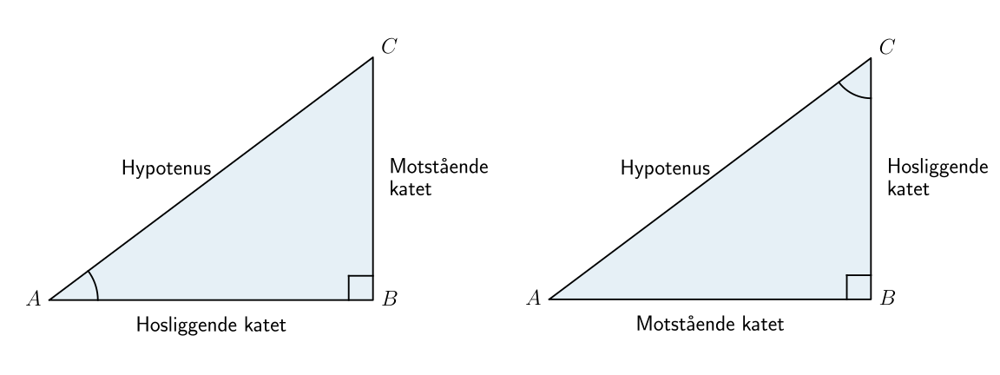
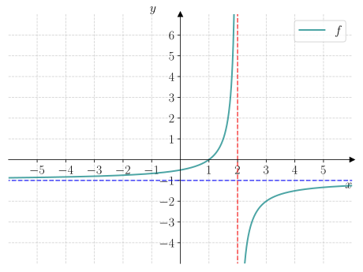
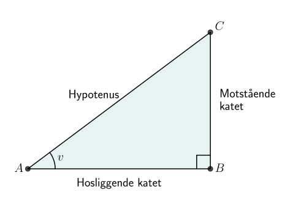
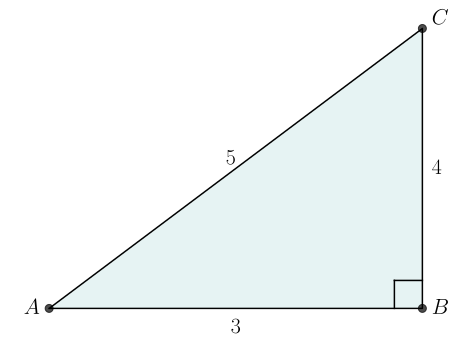
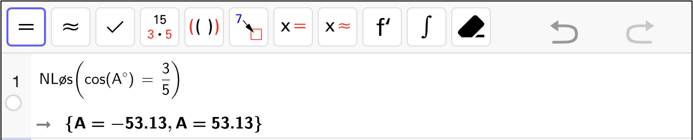
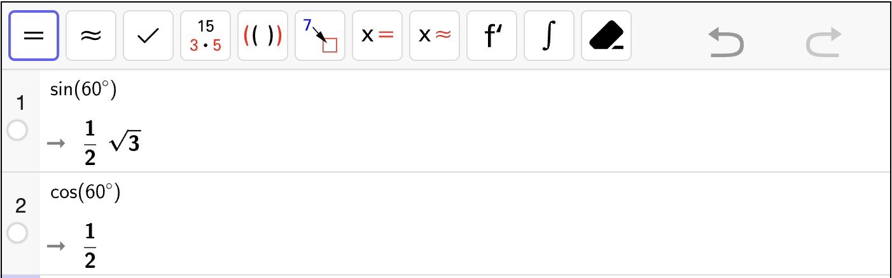
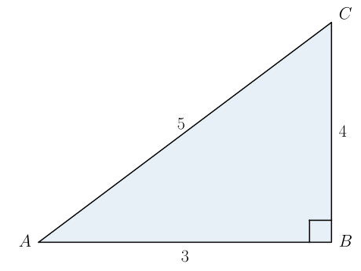

34. \(\sin v\), \(\cos v\) og \(\tan v\)#
Læringsmål
Kunne bestemme \(\sin v\), \(\cos v\) og \(\tan v\) for en vinkel \(v\) i en rettvinklet trekant.
Kunne finne ukjente sidelenger eller vinkler i en rettvinklet trekant ved hjelp av sinus, cosinus og tangens.
Kunne regne ut sinus, cosinus og tangens for bestemte vinkler med CAS.
Kunne bestemme ukjente vinkler med CAS.
Trigonometri er en del av geometrien som handler om trekanter. Her skal vi se på tre trigonometriske størrelser som er sentrale i trigonometri: sinus, cosinus og tangens. Disse størrelsene er forholdstall som er avhengig av en bestemt vinkel \(v\) i en rettvinklet trekant.
Motstående og hosliggende kateter#
Når vi jobber med rettvinklede trekanter, kommer vi til å få bruk for å kategorisere sidene i trekanten.
Motstående og hosliggende kateter
I en rettvinklet trekant, vil katetene i trekanten ha to navn:
Den motstående kateten er kateten som står på motsatt side av vinkelen.
Den hosliggende kateten er kateten som spenner ut vinkelen.
Om en katet er motstående eller hosliggende er altså avhengig av hvilken vinkel vi ser på.
{kind=link}

Underveisoppgave 1
Bestem hvilke sidelengder som er motstående katet og hosliggende katet til vinkel \(A\) i trekanten nedenfor.
{kind=link}

Fasit
Hosliggende katet er \(AB = 3\).
Motstående katet er \(BC = 4\).
Bestem hvilke sidelenger som er motstående katet og hosliggende katet for vinkel \(C\) i trekanten nedenfor.

Fasit
Motstående katet er \(AB = 3\).
Hosliggende katet er \(BC = 4\).
\(\sin v\) og \(\cos v\)#
Vi skal nå se på de to mest grunnleggende trigonometriske størrelsene. Den ene er sinus til en vinkel \(v\) og skrives som \(\sin v\). Den andre er cosinus til en vinkel \(v\) og skrives som \(\cos v\).
Definisjon: Sinus og Cosinus
Sinus og cosinus til en vinkel \(v\) i en rettvinklet trekant er definert som forholdstallene:
{kind=link}

Vi skriver ofte bare \(\sin A\) og \(\cos A\) hvis vi vi jobber med vinkelen i hjørnet \(A\).
Underveisoppgave 2
En trekant er vist nedenfor.
{kind=link}

Bestem \(\sin A\).
Fasit
Bestem \(\cos A\).
Fasit
Bestem \(\sin C\).
Fasit
Bestem \(\cos C\).
Fasit
\(\sin v\) og \(\cos v\) som funksjoner#
Sinus og cosinus er forholdstall som er avhengig av en bestem vinkel \(v\). Vi kan derfor tenke på \(\sin v\) og \(\cos v\) som funksjoner av vinkelen \(v\). Dette er sjeldent vi klarer å bestemme verdien til sinus og cosinus uten å bruke en kalkulator. Vi må derfor vite hvordan vi kan regne ut disse størrelsene i praksis.
Utforsk 1
I figuren nedenfor vises en rettvinklet trekant.
{kind=link}
I trekanten er
Nedenfor vises hvordan vi kan bestemme vinkel \(A\) i trekanten ved hjelp av CAS. Her må vi
Lage en likning der vi skriver \(\sin(A^\circ) = \dfrac{4}{5}\).
Løs likningen for \(A\) med
Nløs-kommandoen.
Altså er vinkel \(A \approx 53.13^\circ\). Vi kan se at vi også får noen løsninger som ikke ligger mellom \(0\) og \(90\) grader. Vi kommer til å se nærmere på hva dette betyr senere.
For å skrive \(\sin (A^\circ)\) i CAS, må vi trykke på “alt” og “o” på Windows, og “option” og “o” på Mac.
Underveisoppgave 3
Trekanten fra Utforsk 1 er vist nedenfor.
Bruk CAS-vindu nedenfor til å bestemme vinkel \(C\).
Fasit
{kind=link}

Fra utskriften kan lese av at vinkelen \(A\) er
siden dette er den eneste løsningen av likningen som ligger mellom \(0\) og \(90\) grader.
Vi kan også regne ut sinus og cosinus til bestemte vinkler ved hjelp av CAS.
Utforsk 2
Nedenfor vises en et CAS-vindu som regner ut sinus og cosinus til vinkelen \(30^\circ\).
Fra utskriften i CAS-vinduet, kan vi se at
I oppgavene skal du komme fram til disse svarene uten å bruke CAS.
Underveisoppgave 4
Bruk CAS-vinduet nedenfor til å regne ut
\(\sin 60^\circ\)
\(\cos 60^\circ\)
Fasit
{kind=link}

Altså er
\(\tan v\)#
Den tredje trigonometriske størrelsen vi skal se på er tangens til en vinkel \(v\) og skrives som \(\tan v\).
Definisjon: Tangens
Tangens til en vinkel \(v\) i en rettvinklet trekant er definert som forholdstallet:
som også er det samme som
Underveisoppgave 5
Bestem \(\tan A\) og \(\tan C\) for trekanten nedenfor.
{kind=link}

Fasit